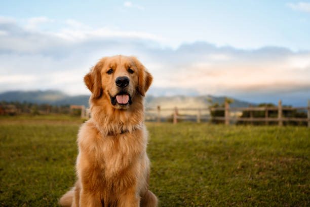
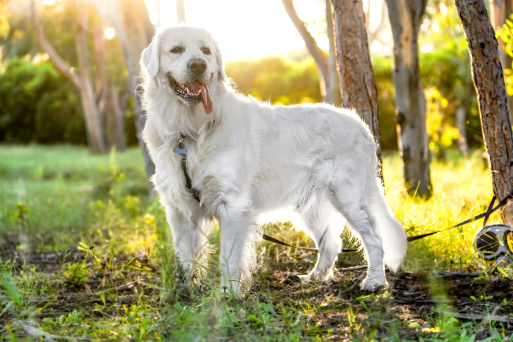

Golden Retriever
INTRODUCCIÓN
El golden retriever es una raza de perro cobrador que se desarrolló alrededor de 1850 en el Reino Unido, concretamente en Escocia.
Con sus características de perro cobrador, sabueso, bloodhound y spaniel de agua, es un hábil perro de caza con aptitudes para el rastreo.
A continuación, veremos las principales características de este animal:
CARACTERÍSTICAS FÍSICAS
Como su nombre lo indica, su pelaje viene en tonalidades de oro claro y oscuro. Su manto se compone de dos tipos de pelo: una capa exterior de pelaje que es resistente al agua y ligeramente ondulada, la cual pelecha en cantidades pequeñas a lo largo del año; y otra capa interna de pelo suave que mantiene al perro fresco en verano y tibio en invierno.
La capa interna, por lo general, es corta y pegada al vientre, y muda en la primavera y el otoño.
El manto nunca debe ser demasiado largo, ya que esto puede llegar a ser un perjuicio en el campo, sobre todo cuando el perro recupera una presa.

TEMPERAMENTO
El golden retriever se caracteriza por su temperamento amigable, confiado y amable, lo que lo convierte en una excelente mascota familiar. Es especialmente paciente con los niños si se socializa y entrena desde cachorro. No es un perro de un solo dueño, ya que suele ser igual de cariñoso con extraños y conocidos, lo que lo hace un pésimo perro guardián. Cualquier muestra de agresividad o timidez no es acorde con su naturaleza, ya que debe ser tranquilo, dócil e inteligente.
Esta raza es reconocida por su gran inteligencia. Según la clasificación de Stanley Coren, ocupa el cuarto lugar entre 131 razas en términos de obediencia y capacidad de entrenamiento, solo detrás del border collie, caniche y pastor alemán. Su facilidad para aprender comandos y adaptarse a distintas tareas lo convierte en un perro ideal para actividades como terapia, asistencia y rescate.
Gracias a su carácter equilibrado y su alto nivel de inteligencia, el golden retriever es una de las razas más populares en todo el mundo. Su combinación de afecto, paciencia y capacidad de aprendizaje lo hace ideal para familias, entrenadores y diversas actividades de servicio.
SALUD
El golden retriever tiene una esperanza de vida promedio de 12 años, según estudios en el Reino Unido. Sin embargo, es propenso a ciertas enfermedades, por lo que un criador responsable debe evaluar la salud de los padres antes de la reproducción y realizar chequeos veterinarios anuales para minimizar riesgos.
Entre los problemas de salud más comunes en la raza se encuentra la displasia de cadera, por lo que es recomendable solicitar pruebas de salud de los progenitores al adquirir un cachorro. También pueden padecer otros trastornos genéticos y enfermedades hereditarias, lo que hace crucial la selección cuidadosa en la crianza.
El sobrepeso es frecuente en los golden retriever, por lo que es importante controlar su alimentación. Los cachorros deben consumir alrededor de tres tazas de comida al día, mientras que los adultos requieren entre tres y cinco tazas, dependiendo del tipo de alimento y su nivel de actividad. Si se les alimenta con dieta BARF, las porciones deben ajustarse a su energía diaria.
Con una alimentación adecuada, revisiones médicas y ejercicio regular, un golden retriever puede mantener una vida saludable y activa, disfrutando de su naturaleza amigable y enérgica.

Regresar a pantalla principal